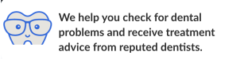
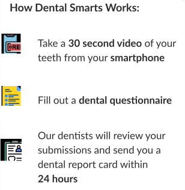

Welcome to Dental Smarts!


Click Here to Get a Dental Report Card
Record Video
Here's a tutorial showing you how to take a good video
Record a Video of Your Teeth
Go back
Do You Have Any Other Queries/Concerns?
Let us know if there is anything else regarding your oral health that we can help with.
Previous
Next
User Terms of Service – Dental Smarts
Please read and agree to the terms of service below.
Our diagnosis lacks 100% certainty, due to the lack of information we can gather. Our dentists can only provide a provisional diagnosis – a diagnosis that lacks 100% certainty due to a lack of information. Additionally, an image consult may help identify certain issues, but not all issues. For a complete/final diagnosis, please schedule an in-person appointment with your dentist. Our app does not serve as a substitute for professional dental advice, diagnosis, or treatment. It is intended to motivate users to take better care of their oral health and visit their dentist more frequently. Our dentists are protected from liability. Dentists who provide the provisional diagnosis via the Dental Smarts app are not held liable for any inexact information provided. Due to the lack of information that we can gather from a video of the mouth, our dentists cannot provide a complete/final diagnosis. Visit your dentist for a complete diagnosis. Some of the data we collect will be used to build machine learning models for predictive analysis. The video of your teeth, questionnaire responses and dental report cards will be stored on the Dental Smarts server for research and development purposes. This information will remain confidential and will not be shared with any 3rd party. This data is accessible to the user as long as their account is active. This data will be used to develop and train artificial intelligence models that can identify dental problems based on images of teeth and questionnaire responses. We respect your privacy and will not share your information with any 3rd party Any basic user information that is provided while creating the user profile, such as name, age, etc., will be kept private in our database and will not be shared with any 3rd party. You agree to send us a video of ONLY your teeth. Inappropriate, unlawful, or videos that represent any of the descriptions noted below are strictly prohibited. You are not allowed to submit videos that contain expressions of hate, abuse, offensive images or conduct, obscenity, pornography, sexually explicit or any material that could give rise to any civil or criminal liability under applicable law or regulations.
I Agree
Go back
We'll Email Your Dental Report Card in 24 Hours
Enter your Details:
Name:
Email:
Submit Image Review Request
Go back